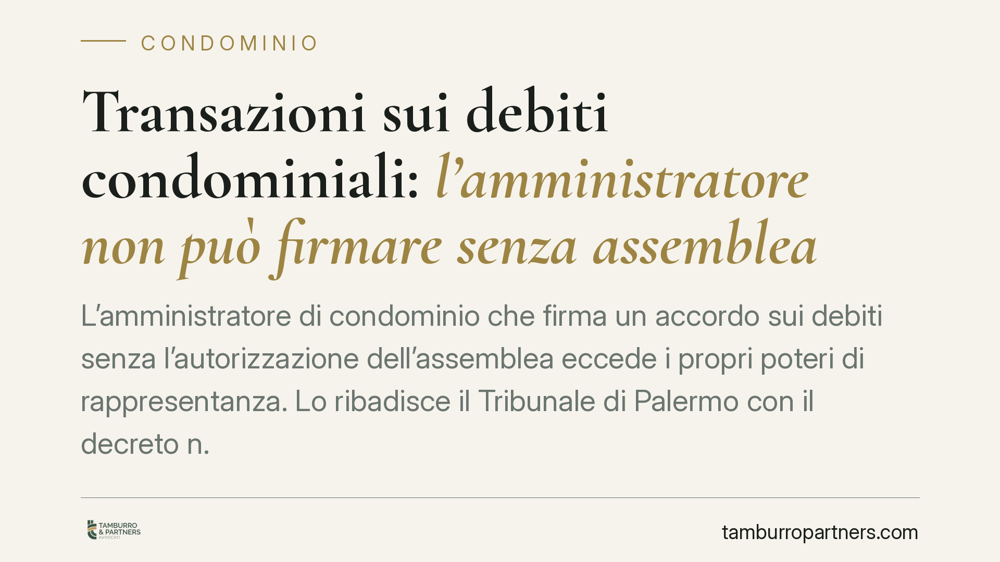

Transazioni sui debiti condominiali: l'amministratore non può firmare senza assemblea
L'amministratore di condominio che firma un accordo sui debiti senza l'autorizzazione dell'assemblea eccede i propri poteri di rappresentanza. Lo ribadisce il Tribunale di Palermo con il decreto n. 3545/2025, che collega l'abuso dei poteri e la violazione degli obblighi informativi alla revoca giudiziaria. Un principio con ricadute concrete per condòmini e creditori.

Il caso e la decisione
Un amministratore sottoscrive una transazione sui debiti del condominio: rinuncia a parte di un credito, concorda un piano di pagamento, chiude una pendenza con un fornitore. Tutto senza passare dall'assemblea.
Il Tribunale di Palermo, con decreto n. 3545/2025, ha ritenuto che una simile condotta integri un abuso dei poteri di rappresentanza. A ciò si aggiunge la violazione dei doveri di comunicazione verso i condòmini. Il risultato è la revoca giudiziaria dell'amministratore.
La decisione non introduce una regola nuova, ma applica con rigore un principio già desumibile dal codice civile.
Inquadramento normativo
L'art. 1131 c.c. definisce i limiti della rappresentanza dell'amministratore. Egli rappresenta il condominio nei limiti delle proprie attribuzioni ordinarie e delle deliberazioni assembleari. La transazione non rientra tra gli atti di ordinaria amministrazione: incide sul patrimonio comune, comporta rinunce e assunzioni di obbligazioni.
Per transigere, quindi, serve una delibera assembleare che conferisca mandato specifico. L'art. 1136 c.c. disciplina le maggioranze necessarie: la transazione, in quanto atto eccedente l'ordinaria gestione, richiede un voto qualificato, non la semplice iniziativa dell'amministratore.
Un passaggio merita attenzione. L'art. 5-ter del D.lgs. 28/2010 consente all'amministratore di attivare la mediazione o di aderirvi senza previa delibera; la decisione sull'esito, però, resta all'assemblea. In altri termini: l'amministratore può avviare il tentativo di composizione, ma non può chiuderlo con un accordo vincolante senza ratifica. La differenza tra "partecipare" e "transigere" è sostanziale.
Implicazioni pratiche
Per i condòmini, la pronuncia conferma uno strumento di tutela. Se l'amministratore dispone del patrimonio comune senza mandato, la revoca giudiziaria (art. 1129 c.c.) è una via percorribile. Non occorre attendere la scadenza dell'incarico né trovare una maggioranza in assemblea: basta l'iniziativa anche di un solo condòmino davanti al tribunale.
Per i creditori, il messaggio è diverso. Un accordo firmato dal solo amministratore, privo di copertura assembleare, è esposto a contestazione. Il creditore prudente verifica a monte l'esistenza della delibera che autorizza la transazione. Altrimenti rischia di stipulare un atto inefficace nei confronti del condominio.
Per l'amministratore, infine, il confine è netto. L'iniziativa gestionale non autorizza a disporre di diritti patrimoniali senza passaggio assembleare. La trasparenza informativa non è una cortesia, ma un obbligo la cui violazione pesa sul piano della responsabilità e della conservazione dell'incarico.
Cosa fare in concreto
- Condòmini: prima di qualsiasi contestazione, richiedete all'amministratore copia del verbale che autorizza l'accordo. L'assenza di delibera è il primo elemento da verificare.
- Condòmini: se riscontrate una transazione firmata senza mandato, valutate l'istanza di revoca giudiziaria ex art. 1129 c.c., documentando l'abuso e l'eventuale danno.
- Amministratori: non sottoscrivete transazioni su crediti o debiti condominiali senza delibera che conferisca mandato espresso; mettete all'ordine del giorno i termini precisi dell'accordo.
- Amministratori: distinguete l'adesione alla mediazione (possibile in autonomia) dalla definizione dell'accordo, che richiede ratifica assembleare.
- Creditori: subordinate la firma della transazione alla verifica della delibera condominiale, acquisendone copia prima della sottoscrizione.
La linea di confine è una sola: l'amministratore esegue, l'assemblea decide. Chi la ignora espone sé stesso o la propria controparte a conseguenze che un controllo preliminare avrebbe evitato.
---
*Contributo informativo a cura di Tamburro & Partners - Avv. Giuseppe Tamburro. Non costituisce parere legale.*
Ogni condominio ha una storia a sé.
Se gestisci un'amministrazione e vuoi un confronto su una specifica questione condominiale, scrivi allo studio. Ti rispondiamo entro un giorno lavorativo.